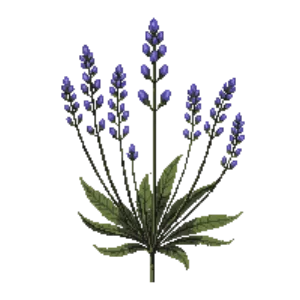

Sea lavender
Limonium perezii

Sea lavender is a perennial for mid-border, suited to full sun and loam, sandy soil or chalk, flowering Jul, Aug, Sep.
| Type | Perennial |
|---|---|
| Mature height | 60 cm |
| Spread | 45 cm |
| Aspect | full sun |
| Foliage | Deciduous |
| Hardiness | USDA 9a-11b, RHS H3 |
| Pollinator-friendly | Yes |
| Pet-safe | Yes |
Where to use it in a border
At around 60 cm, it sits best through the middle of a border, between taller structure behind and edging in front. Give it about 45 cm of room to spread, roughly 2 to the metre when planted in a drift. It is hardy across USDA zones 9a to 11b and rated H3 by the RHS, so check it suits your area before planting.
It appears in our lists of full sun, sandy soil, chalk soil, pollinator-friendly plants, pet-safe plants.
Flowering through the year
Worth knowing
- Its flowers are valued by bees and other pollinators.
Good companions
Plants that share its conditions and style, chosen to complement its place in the border:
- Basket-of-goldto edge in front
- Bottlebrush 'Little John'to flower when it does not
- California Brittlebushto flower when it does not
- California Flannelbushfor height behind it
- Coast Rosemaryfor height behind it
- Compact Strawberry Treefor height behind it
Garden styles
Coastal Mediterranean Wildlife garden
See Sea lavender set in a full border, with spacing and companions worked out for your own conditions, in Border Builder.